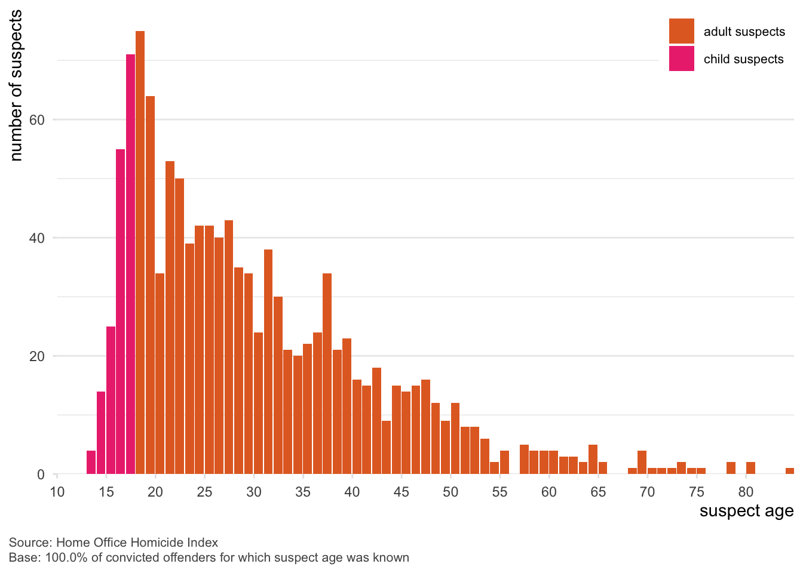

Homicide in England and Wales, Part 3: Homicide offenders
This is the third in a series of blog posts summarising the nature of homicide in England and Wales. Each post covers a different aspect of homicide, based on data from the Home Office Homicide Index. This post looks at who commits homicides. This post is a summary of part of a longer national problem profile of homicide in England and Wales written by me and Prof Iain Brennan.
Each year about 730 people are charged with an offence relating to a homicide in England and Wales. In most cases a single suspect is charged, but multiple suspects are charged in about 28% of charged cases, and in about 6% of charged cases five or more people were charged.
In many cases the details of who committed a homicide will not be known until some time into a police investigation. The Home Office Homicide Index therefore only contains information about suspects who have been charged with homicide offences. To protect the privacy of suspects who are later found not guilty, personal details about a suspect (e.g. their sex and ethnicity) are only included if a suspect has been convicted of a homicide offence. The analysis here is based on data from the three years from April 2019 to March 2022, and includes details of 2,212 charged suspects, with demographic data available for the 1,205 offenders who had been convicted of a homicide offence.
Most homicide offenders are young, but domestic homicide offenders are often older
Most homicide suspects were young (Figure 1): of those offenders convicted of a homicide offence, half were aged between 13 and 26 years old, with a quarter aged between 13 and 19. However, over the three-year period covered by the data there were 19 recorded suspects aged 65 or older (2% of offenders convicted of homicide) with the oldest suspect being aged 84.
While most homicide suspects were young overall, this varied quite a lot depending on the type of homicide (Figure 2). Half of the convicted offenders for homicides of male victims up to age 25 killed in a public place were aged 19 or younger (three quarters were aged 22 or younger), while for female victims of domestic homicide half of convicted offenders were 40 or older.
![Chart showing age distribution of convicted homicide offenders by victim type in England and Wales, with separate density curves for seven sub-types and an “other victims” group. Each curve shows the spread of offender ages, with a vertical line indicating the median. Female victims of domestic homicide (16+): Wide age range with a peak in offenders aged 30–40, tapering off gradually on both sides. Median around age 42. Male victims of domestic homicide (16+): Bimodal distribution with prominent peaks around ages 25 and 45. Median around age 33. Male victims under 25 killed in public spaces: Sharp peak around age 19, indicating most offenders were young. Steep drop-off after age 25. Female victims, non-domestic (16+): Flatter distribution with no strong peak, suggesting a wide range of offender ages. Median around 32. Male victims, non-domestic, killed in public spaces: Skewed toward younger offenders with a peak around age 20. Median 25. Male victims, non-domestic, killed in homes: Broad distribution with a peak around age 35. Median near mid-30s. Victims under 16 killed in non-public places: Bell-shaped curve peaking just under age 30. Almost no offenders older than 50. Other victims: Peak around age 25, with a gradual decline up to age 60, and some offenders older. Median near age 30. Source: Home Office Homicide Index. All data shown is for convicted offenders where age was known.](index_files/figure-html/fig-sus-cluster-age-1.png)
Almost all homicide offenders are men
Homicide offenders were overwhelmingly men: 93% of convicted offenders were male. Of those cases with at least one convicted offender, 65% involved male victims killed by one or more male suspects, 26% involved female victims killed by male suspects, 4% involved male victims killed by female suspects, 3% involved victims killed by multiple offenders including at least one male and one female suspect, and 2% involved female victims killed by female suspects.
Black men are over-represented as homicide offenders
For the 96% of convicted offenders with a known ethnicity, 63% of offenders were White, 18% were Black, and 11% were Asian. Black offenders and those with mixed/multiple ethnicities were over-represented relative to their share of the population at all ages up to age 50 (Figure 3). Black offenders were on-average almost a decade younger (with an average age of 23) than White offenders (average age 32).
![Bar chart showing annual homicide suspect rates per million people by age and ethnicity in England and Wales. The chart is divided into five panels: All suspects, Asian, Black, Mixed/Multiple, and White. Bars are color-coded: dark red indicates a lower or equal homicide rate compared to the total population of the same age, while bright red indicates a higher rate. A stepped line in each panel shows the overall homicide offending rate across all ethnicities for reference. Black suspects, especially aged 20–30, show significantly higher homicide suspect rates compared to other groups, with the highest peak exceeding 80 per million. Other groups peak around ages 20–30 but at lower rates. Asian, White, and All suspects show more moderate rates, while Mixed/Multiple suspects have a small peak. The x-axis shows age in 10-year increments; the y-axis shows homicide suspect rate. Data is from the Home Office Homicide Index, covering 95.1% of known-age, known-ethnicity suspects.](index_files/figure-html/fig-sus-age-ethnicity-1.png)
The over-representation of Black suspects does not mean that most homicide offenders are Black (63% of offenders were White), or that anything more than a tiny fraction of Black people are involved in homicide. Even within the demographic group in Figure 3 with the highest rate of homicide offending (Black people aged 10–19, only about 30 of the 414,000 in that group were homicide offenders each year – 99.992% of people in that group were not.
Important 1: Why are Black men over-represented among homicide offenders?
How likely an individual is to commit a homicide depends on a huge range of factors relating to their psychology and the circumstances they live in. Only a fraction of those factors are recorded in the Homicide Index data we used for this analysis. Black men being over-represented does not mean they are offending because they are Black men – the truth is much more complicated than that. See this explanation from Part 2 of this series.
Offenders from different ethnic groups were also more likely to be involved in different types of homicide (Figure 4). Black offenders were over-represented in all types of homicide, especially in homicides of male victims up to age 25 killed in a public place. Domestic homicides of male victims were less likely to be committed by Asian offenders or offenders with mixed/multiple ethnicities.
![Multi-panel horizontal bar chart showing annual homicide suspect rates per million people by ethnicity and Home Office homicide sub-type. The figure contains eight sub-charts, each with a different horizontal scale. Ethnic groups listed vertically in each panel are Black, Mixed/Multiple, Asian, White, and Other. Solid bars show rates for each ethnic group, while a vertical dashed line marks the average homicide suspect rate for all ethnic groups within that specific sub-type. Panels are titled: (1) Female victims of domestic homicide, age 16+, (2) Male victims of domestic homicide, age 16+, (3) Male victims under 25 killed in public spaces, (4) Female victims, non-domestic, age 16+, (5) Male victims, non-domestic, killed in public spaces, (6) Male victims, non-domestic, killed in homes, (7) Victims under 16 killed in non-public places, and (8) Other victims. Across most categories, Black individuals show the highest suspect rates, often substantially above the dashed average line, particularly for male victims killed in public spaces and non-domestic contexts. White and Other groups generally show lower rates, frequently below the average, while Mixed/Multiple and Asian groups fall between these extremes depending on category. A note explains that dashed lines represent the overall rate per sub-type and that axes differ by panel. Source and base notes appear below the chart.](index_files/figure-html/fig-sus-cluster-ethnicity-1.png)
Homicide offenders are very often unemployed, and often have serious previous convictions
Homicide offenders were much more likely to be unemployed than people in the general population. Suspects were most likely to be unemployed (60% of suspects with known employment status), employed (25%), or a student (12%), whereas at the last census only 3% of people described themselves as unemployed. The over-representation of unemployed men as offenders meant that 35% of all convicted homicide offenders were unemployed White men and a further 13% of all convicted homicide offenders were unemployed Black men.
Around a quarter of charged homicide suspects were known to have a previous conviction for a serious offence (for example kidnap or wounding with intent), including 0.3% of suspects who had a previous conviction for homicide. The convicted homicide offenders with a previous serious conviction included 26% of male suspects and 9% of female suspects. A somewhat higher proportion (34%) of convicted offenders who were Black had a previous serious conviction than the proportion for White or Asian suspects (22% and 21%, respectively).
There was some variation in homicide methods between male and female convicted offenders, with male convicted offenders being more likely to be involved in homicides by shooting (for which 99% of suspects were male), by motor vehicle (97% of suspects were male), and by blunt instrument (95% of suspects were male). Contrary to stereotype, all 3 convicted offenders in homicides by poisoning were male. There was also some variation in homicide methods by ethnicity, with Asian people being more likely to be convicted offenders in homicides by shooting and Black people being more likely to be convicted offenders in homicides by shooting or sharp instrument, when compared to White suspects.
Combining the available demographic information about homicide suspects in England and Wales shows that (among the 46% of suspects for which the necessary fields were completed) the most common suspects for homicides were unemployed White men in their 20s (12% of suspects), unemployed White men in their 30s (9%), and unemployed White men in their 40s (6%) – between them, these three categories make up 27% of all convicted homicide offenders, despite making up about 0.9% of the overall population.
Homicide victims usually know their killers
Homicide victims were usually killed by someone who they knew: 40% of charged suspects were acquaintances of the victim, 17% were a family member of the victim and 17% were a partner or ex-partner of the victim. This contrasts with only 26% of suspects who were strangers.
Among the suspects who were partners or ex-partners, 81% were current partners. 55% of suspects who were categorised as partner/ex-partners were living with the victim, while 52% of suspects who were categorised as family members were living with the victim. Among the suspects categorised as acquaintances, the most-common types of acquaintance were friend or social acquaintance (72%), criminal associate (19%), and business associate or client (4%).
Victim–suspect relationships varied according to victim characteristics: 48% of all female homicide victims were killed by a current or former partner (all suspects in this category were male), compared to 4% of male victims. Conversely, 32% of male victims were killed by strangers, compared to 12% of female victims. These patterns were broadly similar across ethnic groups, although female Asian victims and male Black victims were somewhat more likely to have been killed by a stranger, relative to White victims of the same sex.
Victim–suspect relationships varied substantially by age (Figure 5). In homicides of children under 10 for which the victim–suspect relationship was known, 92% of identified suspects were family members (65% of whom lived with the victim), whereas for older children and adults only 9% of known suspects were family members. We will come back to the issue of child homicide in part six of this series.
Adult male victims were most likely to be killed by acquaintances, while adult female victims were most likely to be killed by a current or ex-partner. There were two exceptions to this: both female victims aged 10–19 and female victims aged 80 or more were most likely to be killed by strangers. However, the relatively small numbers of homicides of victims in these categories means these findings should be treated with caution. We will cover the issue of domestic-abuse homicides in more detail in part six of this series.
![This grouped bar chart shows the percentage of homicide suspects’ relationships to victims in England and Wales, broken down by victim age (in ten-year categories) and sex (female on top, male on bottom). Four relationship types are represented across the chart: partner/ex-partner, family member, acquaintance, and stranger. Among female victims, suspects are most often current or former partners, especially for victims aged 20–49. In contrast, for male victims, suspects are more commonly acquaintances or strangers across all age groups. Family members are most likely to be suspects in homicides of the very young (ages 0–9) and elderly (70+), especially for male victims. For female victims, acquaintance and stranger suspects are less common overall but rise slightly in older age groups. Among male victims, partner/ex-partner suspects account for a very small proportion across all ages. The chart highlights the gendered nature of homicide suspect relationships, particularly the high rates of intimate partner homicide among women. Data source is the Home Office Homicide Index, representing 83.5% of victims for whom age, sex, and suspect relationship are known. The x-axis shows victim age by decade; the y-axis shows percentage of suspect relationships.](index_files/figure-html/fig-sus-vic-relationship-1.png)
Victims are usually killed by someone from the same ethnic group as them
Homicide victims were more likely to be killed by suspects of the same ethnic group as themselves than would be expected by chance (Figure 6). Among White victims for whom the ethnicity of a suspect was known, 86% were killed by White suspects (higher than the 82% of the population who are White). But for Black victims for whom a suspect ethnicity was known, 59% were killed by Black suspects, much more than the 4% percent of the population who are Black. Similarly, among Asian victims for whom a suspect ethnicity was known, 52% were killed by Asian suspects, much more than the 9% percent of the population who are Asian.
![A heatmap-style chart shows percentages of homicide victims by their ethnicity and the ethnicity of the suspect, based on data from the UK Home Office Homicide Index. The chart has victim ethnicities listed on the vertical axis (White, Black, Asian, Mixed/Multiple, Other) and suspect ethnicities on the horizontal axis with the same categories. Each cell contains a percentage and is shaded according to the proportion of total homicide victims, with darker green indicating higher values. The most prominent cell shows that 51% of homicide victims were White individuals killed by White suspects. Other significant cells include Black victims with Black suspects (10%) and Other victims with White suspects (12%). Many cells have values near or at 0%. A vertical color scale on the right indicates shading from 0% (light) to 60% (dark). The data reflects only the 56.8% of cases where both suspect and victim ethnicities were known.](index_files/figure-html/fig-sus-vic-ethnicity-1.png)
These relationships were not solely driven by suspects and victims who knew one another: among Black victims killed by strangers, 67% were killed by Black suspects, while 39% Asian victims killed by strangers were killed by Asian suspects. This likely reflects the fact that people spend more time with people of the same ethnicity as themselves even if the people do not know each other, for example because they attend the same cultural events or because they live close to a facility (such as a place of worship or a cluster of specialist shops) that serves a particular community.
In summary
Homicide – like all types of offending – is heavily concentrated among a small number of people. In particular, almost all homicide offenders are men and a much higher proportion of offenders are unemployed compared to the general population. There are also more Black homicide offenders than we would expect based on their share of the general population.
It’s important to remember, though, that because homicide is so rare then even among groups with the highest rates of offending, the vast majority of people in those groups will never be involved in homicide.
While a lot of media (especially dramatic) narratives about homicide focus on people being killed by strangers, in reality most homicide victims are killed by someone they know. For male victims this is typically a friend or social acquaintance, whereas for female victims it is most often a current or former partner. I’ll go into more detail about this in part six of this series.
The next post in this series looks at how people are killed in homicides.